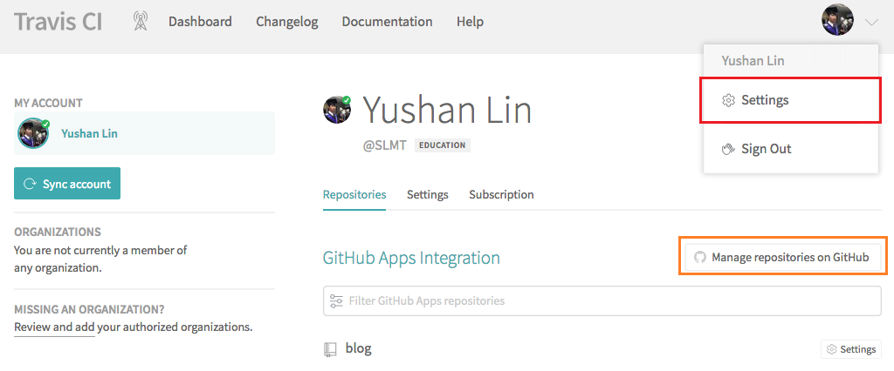
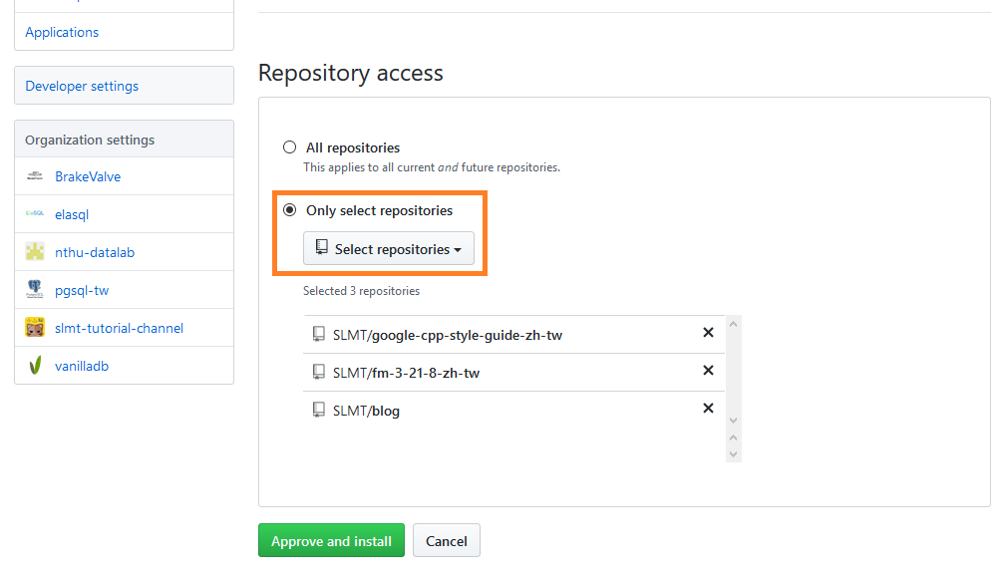
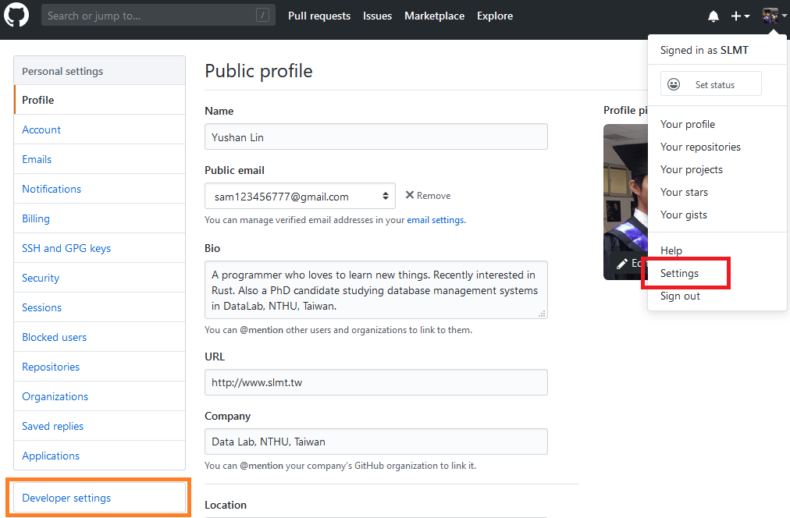
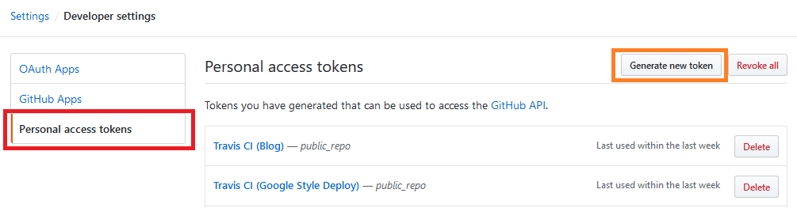
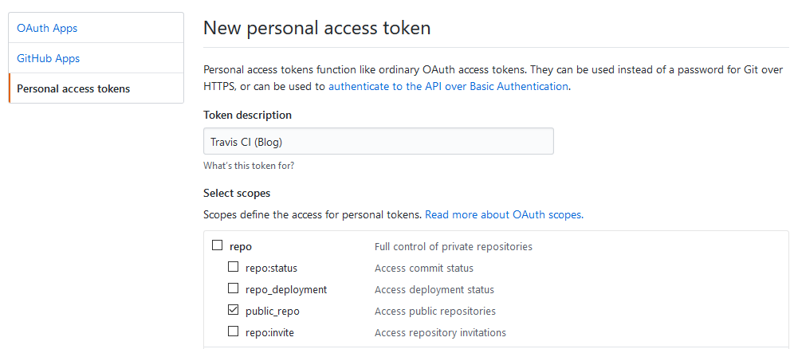
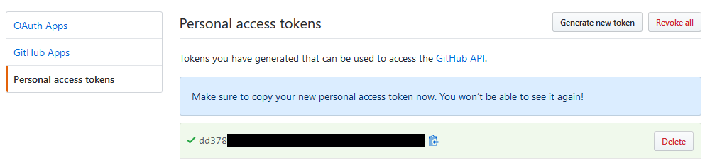
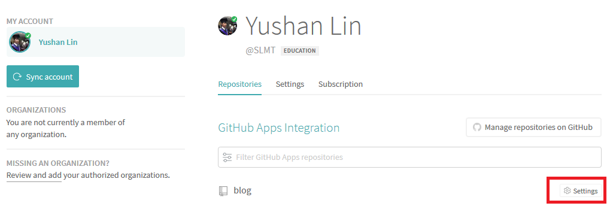
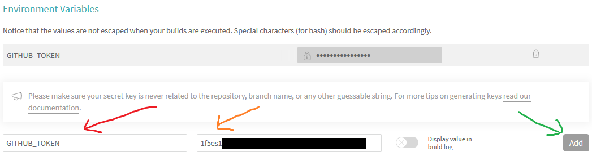
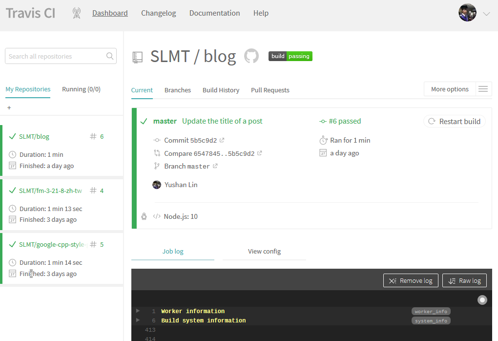

<!DOCTYPE html><html lang="zh-TW"><head><!-- Google Analytics--><script async src="https://www.googletagmanager.com/gtag/js?id=UA-103835191-1"></script><script>window.dataLayer = window.dataLayer || [];
function gtag(){dataLayer.push(arguments);}
gtag('js', new Date());
gtag('config', 'UA-103835191-1');
</script><meta charset="utf-8"><meta name="viewport" content="width=device-width, initial-scale=1.0"><title>SLMT's Blog | 使用 Travis CI 來自動發布 Hexo Blog</title><link rel="stylesheet" href="https://unpkg.com/purecss@1.0.0/build/pure-min.css" integrity="sha384-nn4HPE8lTHyVtfCBi5yW9d20FjT8BJwUXyWZT9InLYax14RDjBj46LmSztkmNP9w" crossorigin="anonymous"><link rel="stylesheet" href="https://unpkg.com/purecss@1.0.0/build/grids-responsive-min.css"><link rel="stylesheet" type="text/css" href="/blog/css/style.css"><link rel="stylesheet" type="text/css" href="/blog/css/syntax-highlight.css"><script src="https://use.fontawesome.com/0bc11e7eba.js"></script><!-- Open Graph Protocol--><meta property="og:title" content="使用 Travis CI 來自動發布 Hexo Blog"><meta property="og:image" content="http://www.slmt.tw/blog/images/logo.png"><meta property="og:type" content="website"><meta property="og:url" content="/blog/2019/04/26/hexo-auto-deploy/"><meta property="og:site_name" content="SLMT's Blog"><meta property="og:locale" content="zh-TW"><meta property="og:description" content="最近將我的部落格改成使用 Travis CI 來自動發布，幫我省去在自己電腦上編譯再上傳到 Github Pages 的麻煩。 因此我將我的作法寫下來，幫助其他用 Hexo 建立 Blog 的人來設定自動發布。"><meta name="generator" content="Hexo 5.3.0"><link rel="alternate" href="/blog/rss.xml" title="SLMT's Blog" type="application/atom+xml">
</head><body><div id="container"><div id="header"><h1 class="title">SLMT's Blog</h1><div class="pure-g navs"><div class="nav pure-u-1 pure-u-sm-1-4"><a href="/blog/.">All Posts</a></div><div class="nav pure-u-1 pure-u-sm-1-4"><a href="/blog/archives">Archive</a></div><div class="nav pure-u-1 pure-u-sm-1-4"><a href="https://www.slmt.tw/">About</a></div><div class="nav pure-u-1 pure-u-sm-1-4"><a href="/blog/rss.xml">RSS</a></div></div></div><div id="main"><h1 class="post-large-title">使用 Travis CI 來自動發布 Hexo Blog</h1><div class="post-meta"><div class="post-date"><i class="fa fa-calendar" aria-hidden="true"></i>2019/04/26</div><div class="post-cats"><i class="fa fa-folder-open" aria-hidden="true"></i><a class="post-cat" href="/blog/categories/building-blog/">Building Blog</a>/<a class="post-cat" href="/blog/categories/building-blog/hexo/">Hexo</a></div><div class="post-tags"><i class="fa fa-tags" aria-hidden="true"></i><a class="post-tag" href="/blog/tags/blog/">#blog</a><a class="post-tag" href="/blog/tags/hexo/">#hexo</a><a class="post-tag" href="/blog/tags/deploy/">#deploy</a><a class="post-tag" href="/blog/tags/travis-ci/">#travis-ci</a></div></div><div class="post-content"><p>最近將我的部落格改成使用 <a target="_blank" rel="noopener" href="https://travis-ci.com/">Travis CI</a> 來自動發布，幫我省去在自己電腦上編譯再上傳到 Github Pages 的麻煩。 因此我將我的作法寫下來，幫助其他用 Hexo 建立 Blog 的人來設定自動發布。</p>
<a id="more"></a>

<h2 id="概念"><a href="#概念" class="headerlink" title="概念"></a>概念</h2><p>這邊使用的方式是讓 Travis CI 來幫我們自動產生網頁，並將產生後的網頁自動上傳到 Github Pages 的做法。</p>
<p>Travis CI 是一種 continous integration (CI) 的服務，他可以連結到 Github 的 repository 上面，並自動幫你執行預先寫好的 script。 Travis CI 通常用於測試 repository 上面的程式碼是否正常，能否正常編譯，是否能透過 test cases 等等。 特別很多 open source project 會在接受其他人的 merge request 前會先確定通過 Travis CI 的測試。</p>
<p>因為 Travis CI 可以執行自訂的 script，並且會在 repository 上有新的 commit 上傳時被自動觸發，因此許多人會用 Travis CI 來自動發布程式碼。</p>
<h2 id="步驟"><a href="#步驟" class="headerlink" title="步驟"></a>步驟</h2><p>以下說明如何用 Travis CI 自動發布。 假設你在 Github 上已經擁有一個 repository，叫做 <code>blog</code>。</p>
<h3 id="第一步：申請-Travis-CI-帳號"><a href="#第一步：申請-Travis-CI-帳號" class="headerlink" title="第一步：申請 Travis CI 帳號"></a>第一步：申請 Travis CI 帳號</h3><p>請先到 <a target="_blank" rel="noopener" href="https://travis-ci.com/">Travis CI</a> 網站申請一個帳號。</p>
<p>注意如果搜尋的話會發現 Travis CI 有兩個網站：一個是 <a target="_blank" rel="noopener" href="https://travis-ci.com/">travis-ci.com</a>，另一個是 <a target="_blank" rel="noopener" href="https://travis-ci.org/">travis-ci.org</a>。 .org 是比較早出來的服務，.com 則是後來為了商業目的而建立的網站。 <a target="_blank" rel="noopener" href="https://blog.travis-ci.com/2018-05-02-open-source-projects-on-travis-ci-com-with-github-apps">官方聲明</a> 建議所有的 project，包括 open source project 都使用 .com 的服務。</p>
<h3 id="第二步：在-Travis-CI-上連結-Github-Project"><a href="#第二步：在-Travis-CI-上連結-Github-Project" class="headerlink" title="第二步：在 Travis CI 上連結 Github Project"></a>第二步：在 Travis CI 上連結 Github Project</h3><p>接下來要讓 Travis CI 知道你的 repository 的存在。</p>
<p>首先先到 Travis CI 上的設定畫面 (紅框處)，然後選擇 Manage Repositories on Github (橘框處)。</p>
<p></p>
<p>選擇自己 blog 的 repository (橘框處)。 或者你也可以選擇上面的「All repositories」連結所有的 repo。放心，這不會讓 Travis CI 有辦法對你的 Github repo 有辦法作任何更動。 完成後選擇 Approve (下面的綠色按鈕)。</p>
<p></p>
<h3 id="第三步：申請-Github-Access-Token"><a href="#第三步：申請-Github-Access-Token" class="headerlink" title="第三步：申請 Github Access Token"></a>第三步：申請 Github Access Token</h3><p>這步驟要到 Github 上申請一個 token，讓 Travis CI 取得上傳網頁到自己的 Github repository 上的權力。</p>
<p>首先先到 Github 上的個人設定頁面 (點選紅框處)，並選擇 Developer Settings 進入開發者設定頁面 (橘框處)。</p>
<p></p>
<p>點選 Personal Access Token (紅框處)，然後選擇 Generate new token (橘框處)。</p>
<p></p>
<p>設定 token 名稱，隨便命名都可以，並點選 repo -&gt; public_repo ，以給他存取 public repo 的權限。 這是為了要讓它能夠上傳資料到 repo。</p>
<p></p>
<p>將 token 複製下來 (綠底處)，注意不要讓其他人取得這個 token，因為其他人取得就可以隨意修改你的 repo 資料。</p>
<p></p>
<p>回到 Travis CI 設定頁面，進入自己 repo 的設定畫面 (紅框處)。</p>
<p></p>
<p>找到最下面的 Environment Variables 區域，在 key 的位置輸入 <code>GITHUB_TOKEN</code> (紅色箭頭)，value 位置放上稍早複製的 token (橘色箭頭)，然後點選右邊的 Add (綠色箭頭)。</p>
<p></p>
<h3 id="第四步：在-Project-內加入-Travis-CI-設定檔"><a href="#第四步：在-Project-內加入-Travis-CI-設定檔" class="headerlink" title="第四步：在 Project 內加入 Travis CI 設定檔"></a>第四步：在 Project 內加入 Travis CI 設定檔</h3><p>以上這些設定都搞定後，再來就是要在 blog 的 project 內放入 Travis CI 的設定檔。 裡面會包含如何正確產生網頁，以及上傳資料到 Github 的指令。</p>
<p>這一步驟只需要在自己的 project 中，最上層資料夾內放入一個 <code>.travis.yml</code> 檔，並放入以下內容：</p>
<figure class="highlight yml"><table><tr><td class="gutter"><pre><span class="line">1</span><br><span class="line">2</span><br><span class="line">3</span><br><span class="line">4</span><br><span class="line">5</span><br><span class="line">6</span><br><span class="line">7</span><br><span class="line">8</span><br><span class="line">9</span><br><span class="line">10</span><br><span class="line">11</span><br><span class="line">12</span><br><span class="line">13</span><br><span class="line">14</span><br><span class="line">15</span><br><span class="line">16</span><br><span class="line">17</span><br><span class="line">18</span><br><span class="line">19</span><br><span class="line">20</span><br><span class="line">21</span><br><span class="line">22</span><br><span class="line">23</span><br><span class="line">24</span><br><span class="line">25</span><br><span class="line">26</span><br><span class="line">27</span><br><span class="line">28</span><br><span class="line">29</span><br></pre></td><td class="code"><pre><span class="line"><span class="attr">language:</span> <span class="string">node_js</span></span><br><span class="line"></span><br><span class="line"><span class="attr">sudo:</span> <span class="literal">false</span></span><br><span class="line"></span><br><span class="line"><span class="attr">branches:</span></span><br><span class="line">  <span class="attr">only:</span></span><br><span class="line">  <span class="bullet">-</span> <span class="string">master</span></span><br><span class="line"></span><br><span class="line"><span class="attr">cache:</span></span><br><span class="line">  <span class="bullet">-</span> <span class="string">npm</span></span><br><span class="line"></span><br><span class="line"><span class="attr">node_js:</span></span><br><span class="line">  <span class="bullet">-</span> <span class="string">&quot;10&quot;</span></span><br><span class="line"></span><br><span class="line"><span class="attr">before_script:</span></span><br><span class="line">  <span class="bullet">-</span> <span class="string">npm</span> <span class="string">install</span></span><br><span class="line">  <span class="bullet">-</span> <span class="string">hexo</span> <span class="string">cl</span></span><br><span class="line"></span><br><span class="line"><span class="attr">script:</span></span><br><span class="line">  <span class="bullet">-</span> <span class="string">hexo</span> <span class="string">generate</span></span><br><span class="line"></span><br><span class="line"><span class="attr">deploy:</span></span><br><span class="line">  <span class="attr">provider:</span> <span class="string">pages</span></span><br><span class="line">  <span class="attr">skip-cleanup:</span> <span class="literal">true</span></span><br><span class="line">  <span class="attr">github-token:</span> <span class="string">$GITHUB_TOKEN</span></span><br><span class="line">  <span class="attr">local-dir:</span> <span class="string">public</span></span><br><span class="line">  <span class="attr">keep-history:</span> <span class="literal">false</span></span><br><span class="line">  <span class="attr">on:</span></span><br><span class="line">    <span class="attr">branch:</span> <span class="string">master</span></span><br></pre></td></tr></table></figure>
<p>這樣就完成了！ 之後每次 commit、push 資料到 Github 上之後，Travis CI 就會自動產生 blog 頁面，並上傳到 Github Page。</p>
<h3 id="第五步：觀察有沒有問題"><a href="#第五步：觀察有沒有問題" class="headerlink" title="第五步：觀察有沒有問題"></a>第五步：觀察有沒有問題</h3><p>最後只要上傳一個新的 commit 到 master branch，就會觸發 Travis CI 開始執行發布動作。 你可以到 Travis CI 的主畫面觀察，同時上面也會顯示執行的 log。 如果一切正常的話，就會如下圖顯示綠色勾勾的結果。</p>
<p></p>
<h3 id="恭喜你成功完成自動發布！"><a href="#恭喜你成功完成自動發布！" class="headerlink" title="恭喜你成功完成自動發布！"></a>恭喜你成功完成自動發布！</h3><h2 id="附錄：解說-travis-yml-內容"><a href="#附錄：解說-travis-yml-內容" class="headerlink" title="附錄：解說 .travis.yml 內容"></a>附錄：解說 <code>.travis.yml</code> 內容</h2><p>這邊大致說明一下設定檔的內容，這樣如果想根據自己需求修改，也會比較方便一點。 詳細的說明可以參考 <a target="_blank" rel="noopener" href="https://docs.travis-ci.com/">官方文件</a>。</p>
<figure class="highlight yml"><table><tr><td class="gutter"><pre><span class="line">1</span><br><span class="line">2</span><br><span class="line">3</span><br><span class="line">4</span><br></pre></td><td class="code"><pre><span class="line"><span class="attr">language:</span> <span class="string">node_js</span></span><br><span class="line"></span><br><span class="line"><span class="attr">node_js:</span></span><br><span class="line">  <span class="bullet">-</span> <span class="string">&quot;10&quot;</span></span><br></pre></td></tr></table></figure>
<p>這兩條設定分別指定這個 repository 要用 Node.js 的環境執行，並且要用第 10 版的 Node.js。 版本的部分也可以設定其他版本，或是 <code>stable</code>。 我使用 10 的原因是在於我某些特定的 module 必須要使用 10 版才能夠跑，如果用最新版則會執行失敗。</p>
<figure class="highlight yml"><table><tr><td class="gutter"><pre><span class="line">1</span><br><span class="line">2</span><br><span class="line">3</span><br></pre></td><td class="code"><pre><span class="line"><span class="attr">branches:</span></span><br><span class="line">  <span class="attr">only:</span></span><br><span class="line">  <span class="bullet">-</span> <span class="string">master</span></span><br></pre></td></tr></table></figure>
<p>這條設定只有在 master branch 有發生變化時（新的 commit），Travis CI 才會執行。</p>
<figure class="highlight yml"><table><tr><td class="gutter"><pre><span class="line">1</span><br><span class="line">2</span><br></pre></td><td class="code"><pre><span class="line"><span class="attr">cache:</span></span><br><span class="line">  <span class="bullet">-</span> <span class="string">npm</span></span><br></pre></td></tr></table></figure>
<p>這條設定會讓 Travis CI 保存 npm 下載的 library。 因為 Travis CI 每次執行時都會使用一個全新的環境，如果保存之前下載過的 library 的話，可以節省重新下載 library 的時間。</p>
<figure class="highlight yml"><table><tr><td class="gutter"><pre><span class="line">1</span><br><span class="line">2</span><br><span class="line">3</span><br></pre></td><td class="code"><pre><span class="line"><span class="attr">before_script:</span></span><br><span class="line">  <span class="bullet">-</span> <span class="string">npm</span> <span class="string">install</span></span><br><span class="line">  <span class="bullet">-</span> <span class="string">hexo</span> <span class="string">cl</span></span><br></pre></td></tr></table></figure>
<p>這條設定定義了執行主要指令之前，應該先執行甚麼指令做準備。 第一條安裝 library，第二條則會清空之前曾經自動建立過的資料，以保持環境整潔。</p>
<figure class="highlight yml"><table><tr><td class="gutter"><pre><span class="line">1</span><br><span class="line">2</span><br></pre></td><td class="code"><pre><span class="line"><span class="attr">script:</span></span><br><span class="line">  <span class="bullet">-</span> <span class="string">hexo</span> <span class="string">generate</span></span><br></pre></td></tr></table></figure>
<p>這條設定執行了產生 blog 網頁的指令。</p>
<figure class="highlight yml"><table><tr><td class="gutter"><pre><span class="line">1</span><br><span class="line">2</span><br><span class="line">3</span><br><span class="line">4</span><br><span class="line">5</span><br><span class="line">6</span><br><span class="line">7</span><br><span class="line">8</span><br></pre></td><td class="code"><pre><span class="line"><span class="attr">deploy:</span></span><br><span class="line">  <span class="attr">provider:</span> <span class="string">pages</span></span><br><span class="line">  <span class="attr">skip-cleanup:</span> <span class="literal">true</span></span><br><span class="line">  <span class="attr">github-token:</span> <span class="string">$GITHUB_TOKEN</span></span><br><span class="line">  <span class="attr">local-dir:</span> <span class="string">public</span></span><br><span class="line">  <span class="attr">keep-history:</span> <span class="literal">false</span></span><br><span class="line">  <span class="attr">on:</span></span><br><span class="line">    <span class="attr">branch:</span> <span class="string">master</span></span><br></pre></td></tr></table></figure>
<p>這條設定是由 Travis CI 特別提供用來發布程式用的，其中 <code>provider: pages</code> 設定要發布到 Github Pages，這邊會由 Travis CI 自己想辦法把指定內容上傳上去。 <code>github-token: $GITHUB_TOKEN</code> 這邊會引入稍早設定的 token，用來取得上傳的權限。 <code>local-dir: public</code> 指定上傳 <code>public</code> 資料夾 (<code>hexo generate</code> 預設輸出的位置) 內的內容。 <code>on: branch: master</code> 這條有點特別，我原先以為是上傳的目的地 branch，但其實指的是 source branch。</p>
</div><div id="disqus_thread"><script>var disqus_shortname = 'slmtsblog';
var disqus_identifier = '2019/04/26/hexo-auto-deploy/';
var disqus_title = '使用 Travis CI 來自動發布 Hexo Blog';
var disqus_url = 'http://www.slmt.tw/blog/2019/04/26/hexo-auto-deploy/';
(function() {
  var dsq = document.createElement('script'); dsq.type = 'text/javascript'; dsq.async = true;
  dsq.src = '//' + disqus_shortname + '.disqus.com/embed.js';
  (document.getElementsByTagName('head')[0] || document.getElementsByTagName('body')[0]).appendChild(dsq);
})();</script><script id="dsq-count-scr" src="//#{theme.disqus}.disqus.com/count.js" async></script></div></div><div id="footer"><p>&copy; Yu-shan Lin (SLMT) and SLMT's Blog, 2016-2021</p></div></div></body></html>